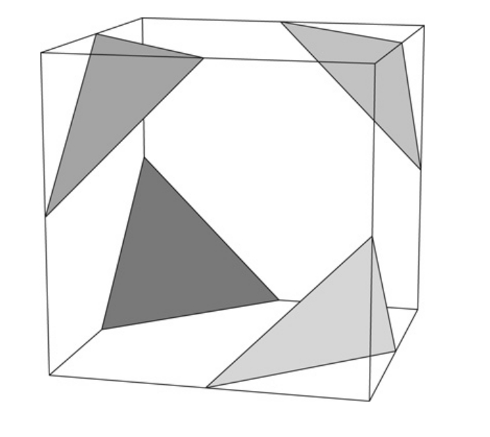
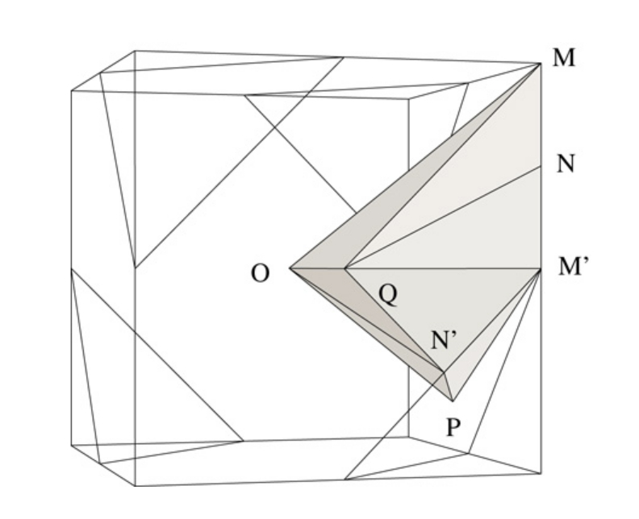
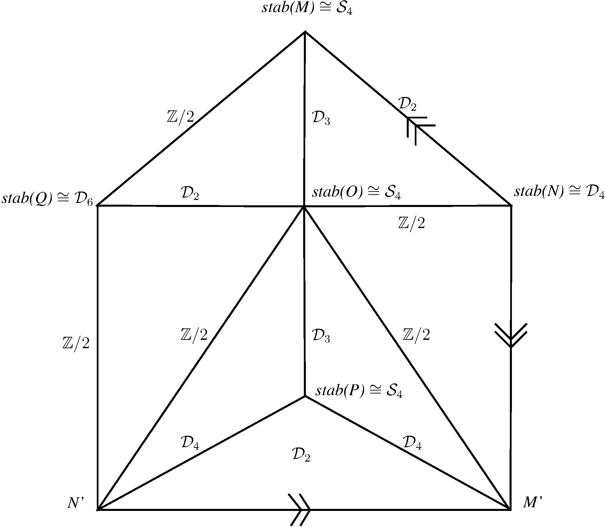
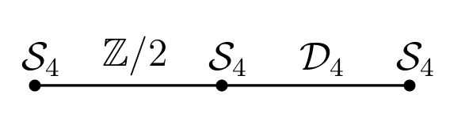

|
|||
|---|---|---|---|
| Torsion Subcomplexes Sub-package by Alexander D. Rahm and Bui Anh Tuan, version 2.1 |
|||
| Consider
a cell complex with a cellular action of a discrete group G on it, and
consider a prime number p. The goal for the usage of this subpackage is
to compute the homological p-torsion of G, by which we mean the modulo
p homology of G (i.e with non-twisted Z/pZ coefficients) in degrees
above the virtual cohomological dimension, or the modulo p Farrell-Tate
cohomology of G.
For the computation of the homological p-torsion of G, only the p-torsion subcomplex is relevant, consisting of all the cells the stabilizers in G of which contain elements of order p. |
|||
| For
instance, let us input Soulé's cell complex for SL_3(Z). 
|
|||
| gap>
S:= ContractibleGcomplex("SL3Z"); Non-free resolution in characteristic 0 for matrix group with 65 generators. No contracting homotopy available. |
|||
| Rigid
Facets Subdivision allows us to recover (essentially) Soulé's
subdivision of the above truncated cube, which is a fundamental domain
for a cell complex for SL_3(Z) such that each cell stabilizer fixes its
cell pointwise. 
[The above two pictures are shown here with the kind permission of
Ruben Sanchez-Garcia, who has reconstructed them from Soulé's paper.]
|
|||
| gap>
R := RigidFacetsSubdivision(S); Non-free resolution in characteristic 0 for matrix group with 65 generators. No contracting homotopy available. |
|||
| Now
that the cell stabilizers are "small" enough, it becomes useful to
extract the 2-torsion subcomplex. 
|
|||
| gap>
TorsionSubcomplex(R,2); |
|||
| To
this 2-torsion subcomplex, we can apply the torsion subcomplexes
reduction technique.
In fact, every time that two adjacent edges and their joining vertex satisfy the following conditions on their stabilizers, we can merge them without changing the equivariant modulo p Farrell homology of the p-torsion subcomplex [see the paper "Accessing the Farrell-Tate cohomology of discrete groups" on how torsion subcomplex reduction works in detail]. One of the sufficient conditions reads as follows. Let G_1 and G_2 be the stabilizers of the two adjacent edges, and let S be the stabilizer of their joining vertex. Then we require G_1 and G_2 to be isomorphic and either G_1 to be isomorphic to S or S to be p-normal and G_1 to be isomorphic to the normaliser in S of the center of a Sylow-p-subgroup of S. |
|||
| gap>
ReduceTorsionSubcomplex(R,2); |
|||
| Then
we obtain the reduced system of stabilizer inclusion displayed in
Soulé's paper. 
|
|||
| Download
of the Torsion Subcomplexes Subpackage at:
http://math.uni.lu/~rahm/subpackage-documentation/
TorsionSubcomplexesSubpackage.tar.gz or http://math.uni.lu/~rahm/subpackage-documentation/ TorsionSubcomplexesSubpackage.zip Documentation of the functions in the Torsion Subcomplexes Subpackage at: http://hamilton.nuigalway.ie/Hap/doc/chap27.html |
|||
|